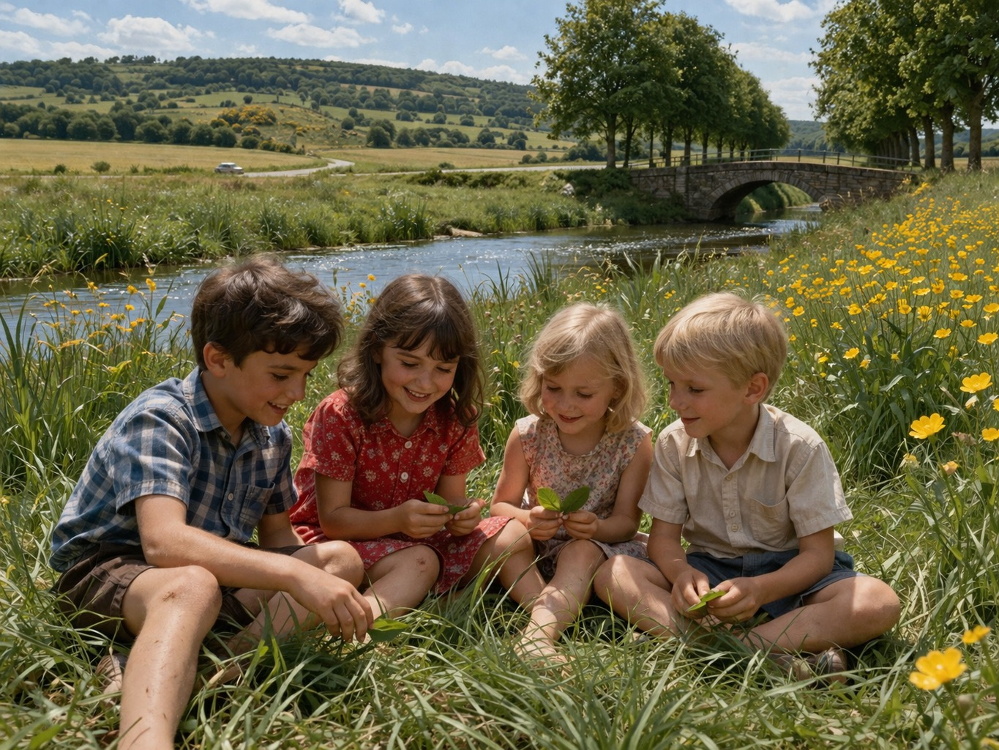

Es war Ende der 1950er Jahre – einer dieser Sommer, die uns endlos erschienen und in denen die Tage sich weit nach hinten dehnten. Für uns Kinder schien die Zeit manchmal stillzustehen, zumindest solange nichts geschah. Doch wenn wir uns trafen und gemeinsam etwas unternahmen, dann vergingen die Tage wie im Flug.
Von der Bernkasteler Straße aus war es nur ein kurzer Weg hinaus in die Natur – vielleicht hundert Meter. Vorbei an der Schreinerei Ertz, zwischen der Gerberei und der Kohlehandlung von Ernst Weyand, führte der schmale Pfad entlang des Morbach, der im Dorf von allen „die Gotterbach“ genannt wurde. Kaum hatten wir die letzten Häuser hinter uns gelassen, öffnete sich die Landschaft. Hinter uns lag das Dorf, vor uns die weite, warme Sommerwelt.
Direkt hinter der Gerberei lag eine Viehweide. Das Braunvieh stand träge in der Sonne, bewegte sich gemächlich oder lag wiederkäuend im Gras. Manchmal blieben wir stehen und beobachteten die Tiere. Einfach so.

Meist waren wir zu viert unterwegs: Heiner und seine Schwester, meine kleine Schwester und ich. Gemeinsam streiften wir durch die Wiesen, die sich farbenfroh vor uns ausbreiteten. Vor uns, fast am Horizont, glitzerte die Dhron in der Nachmittagssonne, während sich weiter oben die Hunsrückhöhenstraße durch die Landschaft zog. Nur selten unterbrach das leise Tuckern eines Autos die Stille, wenn jemand über die holprige Bernkasteler Straße hinaus in Richtung Dreieck fuhr.
Unsere liebsten Plätze fanden wir an einer sumpfigen Wiese am Rande der Gotterbach. Dort war das Gras besonders hoch und weich. Wir ließen uns einfach hineinfallen, schauten in den Himmel, lauschten dem Summen der Mücken und Bienen und beobachteten die bunten Schmetterlinge.
Und dann gab es den Sauerrampes. Wir pflückten die frischen Blätter, kühl und saftig, und kauten darauf herum. Ihr säuerlicher Geschmack war erfrischend. Genau das Richtige für einen heißen Nachmittag.
Während die Sonne langsam tiefer sank, merkten wir gar nicht, wie die Zeit verging. Bis die Betglock läutete. Mit Grasflecken an den Knien und dem Geschmack von Sauerrampes auf der Zunge machten wir uns auf den Heimweg.